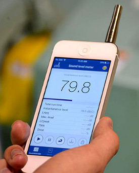

NOISE AND HEARING LOSS PREVENTION
 ShareCompartir
ShareCompartir
NIOSH Sound Level Meter App
The NIOSH Sound Level Meter mobile application is a tool to measure sound levels in the workplace and provide noise exposure parameters to help reduce occupational noise-induced hearing loss.
Key Benefits
- Raises workers’ awareness about their work environment
- Helps workers make informed decisions about the potential hazards to their hearing
- Serves as a research tool to collect noise exposure data
- Promotes better hearing health and prevention efforts
- Easy to use
Send Us Your Feedback or Request Help
Click the following link to send us your feedback
Click the following link to request help
Frequently Asked Questions (FAQ)
What are the main features of this app?
The NIOSH Sound Level Meter app has many important features, it provides a readout of the sound level using the built-in microphone (or external microphone if used) and reports the instantaneous sound level in A, C, or Z-weighted decibels. The weighting is user-selectable and can be accessed in the “Settings” screen. The app also reports the main metrics that are of importance for proper occupational noise measurements – mainly the run time (total time), the A-weighted Equivalent Sound Level (LAeq), the Maximum Level measured during the current run time, the C-weighted Peak Sound Pressure Level (LCpeak), the Time-Weighted Average (TWA) and Dose. The app also contains some basic information on noise and hearing loss prevention. In addition, the app allows the user to save and share measurement data using the smartphone other communication and media features. If location services are enabled, the app can utilize the GPS feature to provide an exact geospatial location of the noise measurement.
Disclaimer: Please note that professional sound level meters must comply with a host of acoustical and electrical tests to meet national and international standards. As of today, no smartphone or smartphone-based app has met the requirement of such standards. Although we tested and verified the accuracy and functionality of this app at the NIOSH Acoustics Laboratory (over a specific testing range), this app does not comply with any national standard.
Why did NIOSH develop a Sound Level Meter app?
NIOSH estimates that there are 22 million workers who are exposed to hazardous noise levels every year. In addition to damaging workers’ quality of life, occupational hearing loss carries a high economic price to society. During our studies, we realized that most of the apps on the market are oriented at the casual user and lack the accuracy and functionality necessary to conduct occupational and general purpose noise measurements. NIOSH hearing loss researchers collaborated with an app developer, EA LAB, to create an iOS based sound level meter app that measures and characterizes occupational noise exposure similar to professional instruments. The app can serve as a tool to raise workers’ awareness about noise in their work environment and help them make informed decisions about the potential hazards to their hearing. In addition, the app can serve as a research tool for scientists and occupational safety and health professionals to collect noise exposure data and promote better hearing health and prevention efforts.
How do I use this app?
Refer to the Help Guide for an overview of features and functions:
How to interpret the results
NIOSH establishes recommended exposure limits (REL) for various hazards on the basis of the best available science and practice. The REL for noise is 85 decibels, using the A-weighting frequency response an 8-hour average, usually referred to as time-weighted average (TWA). Exposures at or above this level are considered hazardous. OSHA sets legally-enforceable permissible exposure limit (PEL) that require employers to take actions to reduce worker exposures. The OSHA PEL for noise is 90 dB(A) as an 8-hr TWA based on a 5-dB exchange rate.
Occupational standards specify a maximum allowable daily noise dose, expressed in percentages. For example, a person continuously exposed to 85 dB(A) per NIOSH or 90 dB(A) per OSHA over an 8-hour work shift, will reach 100% of their daily noise dose. The noise dose is based on both the sound exposure level and how long it lasts (duration). This dose limit uses a 3-dB time-intensity tradeoff commonly referred to as the exchange rate or equal-energy rule: for every 3-dB increase in averaged noise exposure, the allowable exposure time is reduced by half. For example, if the exposure increases to 88 dB(A), workers should only be exposed for four hours. Alternatively, for every 3-dB decrease in averaged noise exposure, the allowable exposure time is doubled, as shown in the table below.
| Time-Weighted Average (TWA) | Time to reach 100% noise dose |
| 85 dB(A) | 8 hours |
| 88 dB(A) | 4 hours |
| 91 dB(A) | 2 hours |
| 94 dB(A) | 60 minutes |
| 97 dB(A) | 30 minutes |
| 100 dB(A) | 15 minutes |
It is important to differentiate between noise level and time-weighted average noise exposure. While noise levels describe the intensity of sounds at a given point in time, the NIOSH exposure limits are set as time-weighted average exposures over periods of time. If noise level measurements consistently exceed 85 dB(A), we recommend that you follow up with a professional such as an industrial hygienist or an occupational safety and health specialist to conduct a professional noise survey at your workplace. Remember, protecting your hearing is a good health practice no matter where your ears are!
Why is the app only available on iOS devices?
iOS devices share common hardware and software architecture that is optimized for audio applications. Therefore, we have been able to verify that the NIOSH SLM app will perform as expected on any iOS device. On the other hand, the Android device marketplace is fragmented among many manufacturers with different requirements and specifications for microphones, audio/signal processing chips, and software tools. As a result, testing and verification of the accuracy and functionality of an Android-based app in our laboratory is not currently possible.
How can I get a copy of the app?
Please use this link to Apple’s iTunes to download the app or search iTunes for NIOSH SLM.
NIOSH researchers value users’ feedback and input in order to improve the app’s appearance, content, and functionality. Please send us feedback here.
Relevant Publications and Studies
NIOSH smartphone studies:
Evaluation of smartphone sound measurement applications – Journal of Acoustical Society of America
So how accurate are these smartphone sound measurement apps? – NIOSH Science Blog
Evaluation of smartphone sound measurement applications (apps) using external microphones – A follow-up study – Journal of Acoustical Society of America
Improving the accuracy of smart devices to measure noise exposure – Journal of Occupational and Environmental Hygiene
- Page last reviewed: August 5, 2016
- Page last updated: January 13, 2017
- Content source:
- National Institute for Occupational Safety and Health Division of Applied Research and Technology